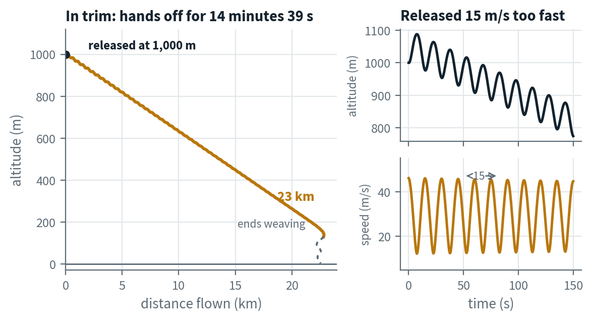
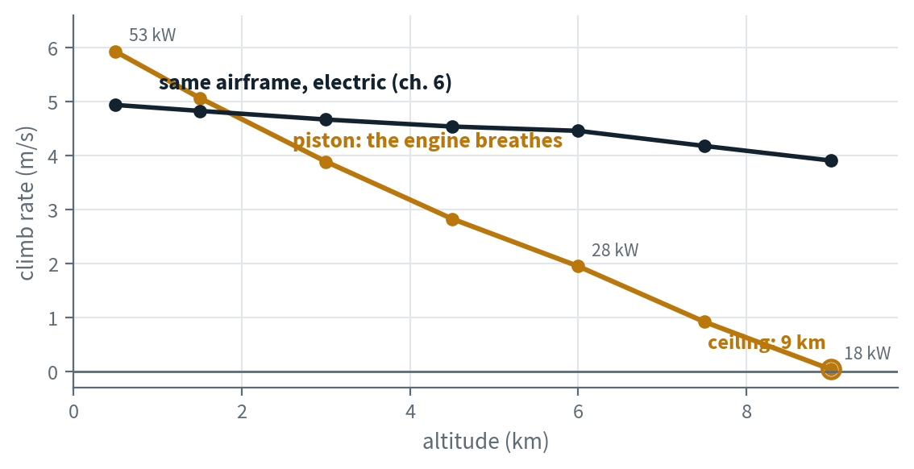
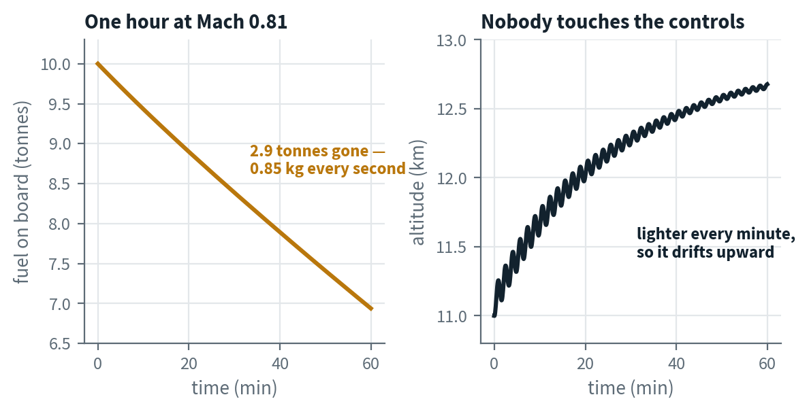
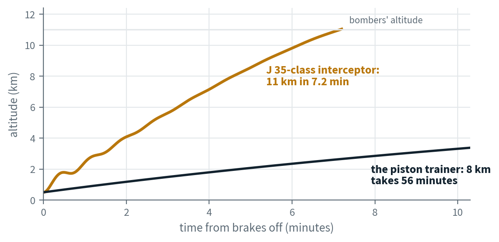
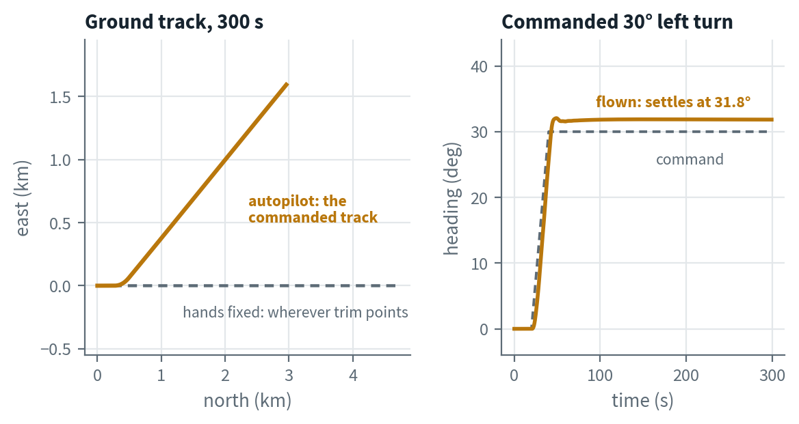
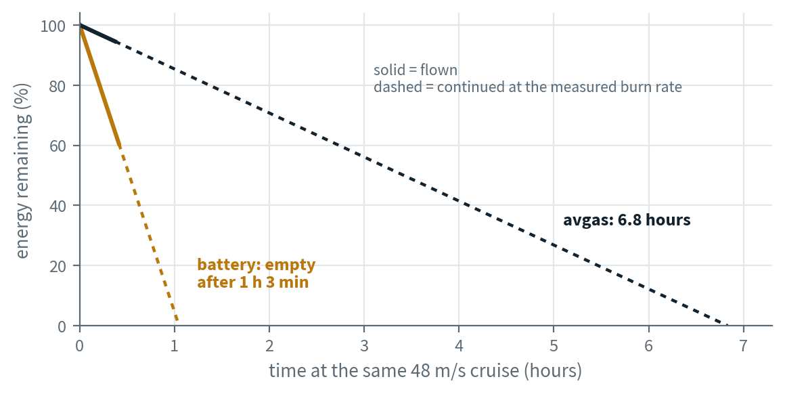
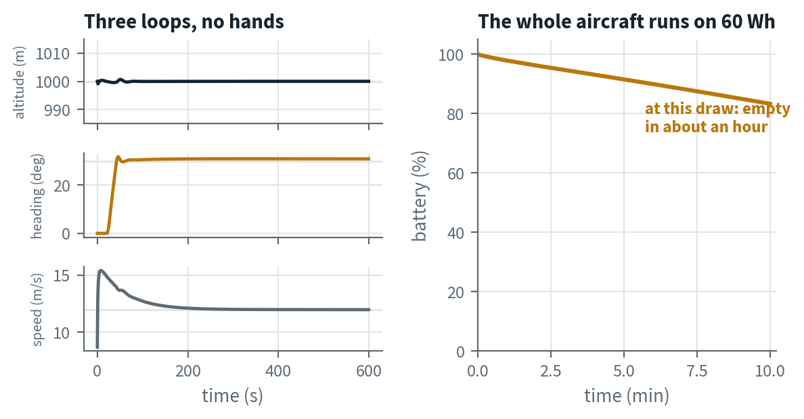

The Swedish Air Force turns 100 this weekend, and the
air show in Linköping is themed past, present and future.
This note flies the century in seven simulations.
Ankit Naik · Thinking in Systems · August 2026
· Download PDF
Overview
The century in seven aircraft
The idea. Fly the century in order, one simulation per era:
a glider, a piston trainer, a jet airliner, an interceptor, an autopilot, an
electric trainer and a drone.
The pattern. Each aircraft fixes the biggest problem of the
one before it and brings a new problem of its own. The century is that handover,
repeated seven times.
The numbers. Every figure in this book comes out of
the simulations: the same models, flown, measured and plotted.
Why now. The show's future segment is drones and satellites:
aircraft that get designed and tested in simulation before any metal is cut.
This book shows a small part of how that works.
25
Meters forward per meter of height, for a glider with no engine at all
≈70×
Energy per kilogram: avgas vs the battery in the same airframe
7.2 min
The interceptor's climb to 11 km (the piston trainer needs 56 minutes to reach 8)
The seven problems
The glider had no engine. The piston engine ran out of air at altitude; the
jet fixed that and burned fuel at 2.9 tonnes an hour. The interceptor bought
speed that lasted minutes. The autopilot took over the hands, the battery brought
back the oldest problem of energy on board, and the drone removed the pilot.
Chapter 1 · 1900s–1920s
01 Altitude is the only fuel
A hundred years ago you flew by borrowing height: Lilienthal
ran off hills, the Wrights glided from dunes, the 1920s clubs bungeed
gliders off hilltops. I released one in simulation at 1,000 m and let the
stick go.
Released
Glide speed
Sink
Stays up
Reaches
In trim, 31 m/s
29 m/s steady
1.1 m/s
14 min 39 s
23.1 km
15 m/s too fast
swings 12–46 m/s
—
porpoises every 15 s, height swinging ±90 m
The glider is a Schweizer SGS 1-36, a 1980 design that flies by the era's rule: height in, distance out. Trimmed right it flies itself, 25 m forward for every meter of height.
Released too fast, it porpoises: climbs, slows, dives, speeds up, climbs again, every 15 seconds. Gliders do this on their own; the pattern is called the phugoid.
Either way it ends on the ground once the height is spent. An engine removes that limit.

Figure 1. The same glider released twice: once in trim, once 15 m/s too fast.Chapter 2 · 1930s–1940s
02 The engine breathes
With a 60 kW piston engine on the same class of light airframe,
height can be bought back, up to the altitude where the air gets too thin.
Full throttle from 500 m, the trainer climbs at 5.9 m/s.
A piston engine breathes the same air the wing flies in, so its power falls as the air thins with altitude.
By 4,000 m half the climb is gone. At 9,000 m the engine is down to 18 kW, just enough to overcome drag with nothing left to climb on. That altitude is the ceiling.

Figure 2. Climb rate measured in short sawtooth segments, the flight-test way. The piston line falls almost linearly with air density, from 53 kW near sea level to 18 kW at the 9 km ceiling. The dark line is the same airframe with an electric motor, which needs no air; chapter 6 covers it.
The era's limit
A bigger piston engine loses power with altitude in the same way. The fix is
an engine that carries its own compressor and squeezes the thin air back to a
density it can burn: the jet of the next chapter.
Chapter 3 · 1950s–1960s
03 Thin air becomes the point
The jet's compressor keeps feeding the engine as the air thins,
and thin air has less drag, so cruising high becomes the efficient choice. I put a DC-8 with four turbojets at 11,000 m and Mach 0.82 and
left the controls alone.
2.9 t/h
Fuel burned holding Mach 0.81, or 0.85 kg every second
876 km/h
Ground covered per hour: the glider's whole flight every 95 seconds
42 s
How often it burns the little Alpha's entire 36 kg fuel load

Figure 3. One simulated hour at 11 km, controls untouched. The tanks drain 2.9 tonnes; the aircraft, lighter every minute, drifts 1.7 km upward, the cruise-climb real DC-8s flew on purpose.
It cruises above the piston engine's ceiling, covering the glider's whole flight every 95 seconds.
It burns three tonnes of fuel an hour. With nobody holding the altitude, it also porpoises for the whole hour, so something has to fly it.
Chapter 4 · 1950s–1970s
04 Climb becomes a weapon
For 1950s Sweden the problem was time: unknown aircraft over
the Baltic at 11,000 m, and only minutes to meet them. That job shaped the
J 35 Draken. I scrambled a Draken-class delta (49 m² of wing,
78 kN of afterburning turbojet) from 500 m.
7.2 min
From 500 m to the bombers' 11,000 m
12×
Faster to 8 km than the piston trainer of chapter 2
30%
Of its internal fuel burned just getting up there

Figure 4. The scramble, flown at a 230 m/s climb schedule
(a speed-hold pitch loop stands in for the pilot, as the wing leveler does in
roll). The piston trainer's whole 56-minute struggle to 8 km fits under the
first bend of the Draken's curve.
The speed costs twice: thin delta wings hold little fuel, and the afterburner burns 1.3 kg of it every second. Reaching the bombers eats 30% of the tank.
The interceptor has minutes of fuel and one very busy pilot doing intercept sums at nine kilometers a minute. Handing some of the flying to a machine helps with both.
Chapter 5 · 1960s–1990s
05 The hands come off
This autopilot is three simple
control loops, each reading one sensor and moving one control surface. I gave
the chapter-1 glider a set and asked for a 30° left turn.
It rolls in, flies the turn and holds the new heading within two degrees for the rest of the flight.
With the stick fixed instead, the same aircraft goes wherever its trim points and eventually starts weaving, as the glider did at the end of chapter 1.
Feedback loops like these damped the DC-8's porpoising and took workload off the interceptor pilot.

Figure 5. The same glider as chapter 1, now flown by its autopilot. Commanded 30°, it settles at 31.8° and flies a straight track; the dashed track is the hands-fixed aircraft.
What three PID loops replace is the pilot's patience.
Chapter 6 · 2010s–today
06 The fuel problem returns
Pipistrel sells the same little two-seater twice: the Alpha
Trainer burns petrol, the Alpha Electro carries a battery. The two share wings and
weight. I flew both at the same speed and compared how fast each used its energy.
Same airframe
Energy on board
Endurance
Lands
Alpha Trainer · 36 kg avgas
≈1,570 MJ
6 h 50 min
36 kg lighter
Alpha Electro · 22 kWh battery
79 MJ
1 h 3 min
same weight it took off at

Figure 6. Both aircraft at the same 48 m/s cruise. Solid lines are flown; dashed lines continue at the measured burn rate.
A kilogram of petrol holds about 70 times more energy than a kilogram of this battery. The motor is far more efficient, which recovers some of that, but the petrol plane still flies 6.8 hours to the battery's one.
The electric motor needs no air, so its power holds with altitude. At 9,000 m, where chapter 2's climb died, the electric version is still climbing at 3.9 m/s (figure 2). As with the glider, the flight lasts as long as the energy it took off with.
Chapter 7 · 2020s →
07 Remove the pilot
The last aircraft weighs a few kilograms and nobody is aboard.
Its battery holds 60 Wh, about a laptop's worth, and an autopilot
flies the whole mission.
Told to hold 1,000 m, turn 30° and keep 12 m/s, it holds altitude within half a meter and heading within a third of a degree until the battery runs out, about an hour later.
It is chapter 5's autopilot plus one more loop, the throttle. With that loop closed, no pilot is needed on board.
The air show's future segment is drones and satellites. Once the pilot is software, the aircraft can be any size the mission needs.

Figure 7. The whole mission, unmanned: altitude, heading and speed each pinned to its commanded value by its own loop, while the 60 Wh battery drains at about 1% a minute.
Closing
Each era's aircraft answers the last era's limitation
Gliders borrowed height. The piston engine added power until the air thinned,
and the jet's compressor fixed that at a high fuel burn. The interceptor's speed
lasted minutes, feedback loops took over holding the course, the battery brought
back the glider's fixed energy budget, and the drone left the pilot on the ground.
Every aircraft flying at Malmen this weekend descends from one of these steps.
All seven aircraft were built from one component library.
Happy 100th, Flygvapnet. Much of the next hundred years will fly in simulation first.
Every number in this study comes from a six-degree-of-freedom
flight simulation in Wolfram System Modeler, using one Modelica aircraft
library. Read the limits before trusting the conclusions.
The aircraft are calibrated replicas. They are not certified models. The glider and both Alphas trace to published data of real aircraft; the DC-8 and the J 35-class delta carry known simplifications (an unswept wing on one, elevons modeled as a small tail surface on the other), so treat their numbers as era-typical, not type-accurate.
Hands-fixed flight is eventually unstable in roll, as it is in reality; even the trimmed glider ends its 15-minute flight weaving. Powered scenarios add one proportional bank-to-aileron feedback, a wing leveler standing in for the pilot's lateral corrections; the interceptor also carries a proportional speed-hold pitch loop, the climb schedule a pilot would fly. The glider chapters fly hands-off.
Piston vs electric endurance compares the model pair as built: same airframe, same takeoff mass, cruise at the same speed and altitude. Battery mass is inside the airframe's fixed mass; fuel mass burns off. The 70× energy-per-kilogram figure uses the real Alpha Electro pack's published mass of ≈126 kg; the model does not compute it.
Each engine is one equation: a density lapse for the piston, a Mach/altitude map for the turbojet and an efficiency chain for the electric motor. That is enough for ceilings and endurance but too coarse for detailed performance charts.
Climb and endurance use flight-test method. Climb rate comes from short sawtooth segments at each altitude; endurance from the measured steady cruise burn rate. The DC-8 also needed a large fixed trim deflection, a consequence of its documented undersized elevator.
How it was built
Airframes, engines, sensors and autopilots from the FixedWing Modelica library; scenarios assembled as small top-level models.
Simulated in Wolfram System Modeler (DASSL), compiled and run headlessly through its kernel; plots and analysis from the raw result trajectories.
Atmosphere: US Standard Atmosphere 1976 throughout.
Engine lapse laws: Gagg-Ferrar (piston), σ0.7 (turboprop reference), thrust-ratio map at the design point (turbojet).